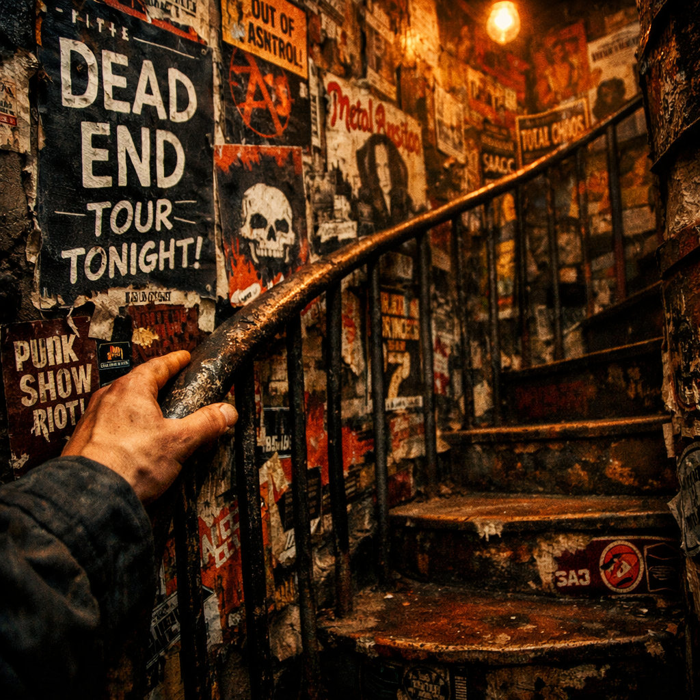
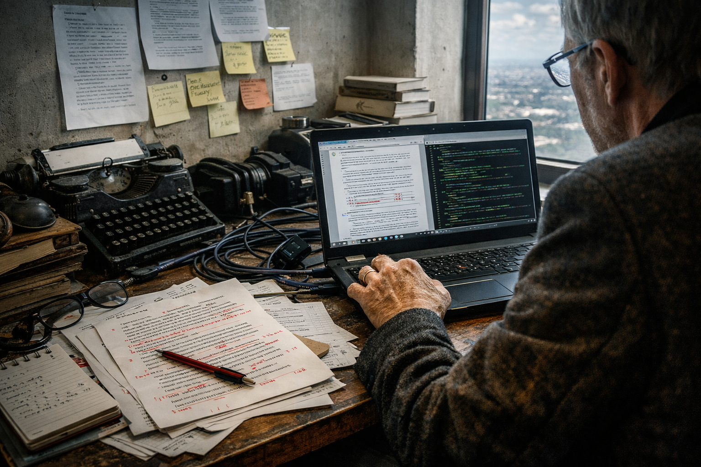

Novel template / immersive runway
Template 4: Immersive chapter runway
Use this when a novel page should feel like entry into a chamber: title pressure first, then fragment, then visual sequencing.
“Let the page be a threshold before it becomes an explanation.”
Atmosphere plate
First image establishes weather and world orientation before exposition.

Pressure detail
Second image tightens tension and sets narrative compression.

Process trace
Third image marks material process and objecthood of the work.
Use case
Novels, short stories, and image-forward literary dossiers.